지난 포스터에서 우리는,
https://jeffdissel.tistory.com/123
[Pulsatile flow] Flow on a elastic tube
혈관의 흐름을 분석하기 위해서,실제 혈관의 벽면의 움직임도 고려해 주어야 한다. 이전 포스터에서는 혈관 벽이 고정 rigid wall가정으로 혈액의 속도장을 계산하였다면,(사실 큰 동맥 이외에
jeffdissel.tistory.com
(무조건 보고 오셔야 합니다..)
Elastic property를 가진 tube wall 에서
안에 흐르는 pulsatile flow 유체의
Axial 방향 속도 - U(r)
Radial 방향 속도 - V(r)
압력 - P(r)
을 다음과 같이 유도하였다.
![[Pulsatile flow] 2. Force on the elastic tube wall](./images/img-001.png)
시간, x에 따른 주기성
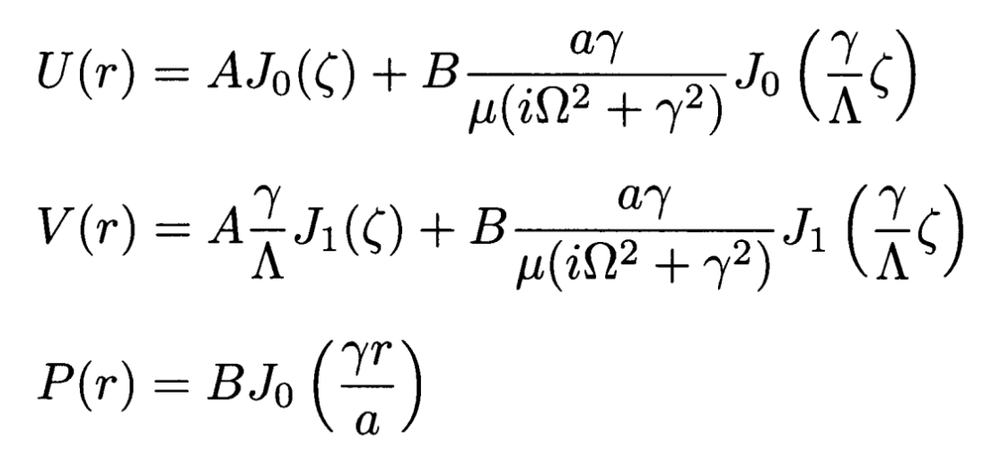
A,B는 일반해의 임의의 상수이고,
감마는 다음과 같이 정의 하였다.
(지난포스터참고)
![[Pulsatile flow] 2. Force on the elastic tube wall](./images/img-003.png)
여기서, 우리는 일반적인 혈액 유동의 한가지 가정을 하였었다.
바로 흐르는 유체 파동의 파장이,
반지름보다 훨씬, 크다는 것이다.
즉, 파동의 전파속도가 r방향의 유체속도보다
훨씬 크다는 가정을 하면,
다음과 같이 감마는 정의에 따라, 0에 가까워지고,
베셀함수의 성질로 다음과 같이 유도된다.
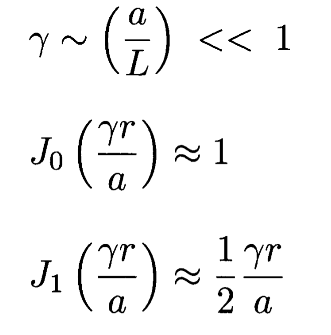
위와 같이 근사되는 이유 - 테일러 시리즈
![[Pulsatile flow] 2. Force on the elastic tube wall](./images/img-005.png)
![[Pulsatile flow] 2. Force on the elastic tube wall](./images/img-006.png)
따라서, r방향의 진폭들이 다음과 같이 정리되며
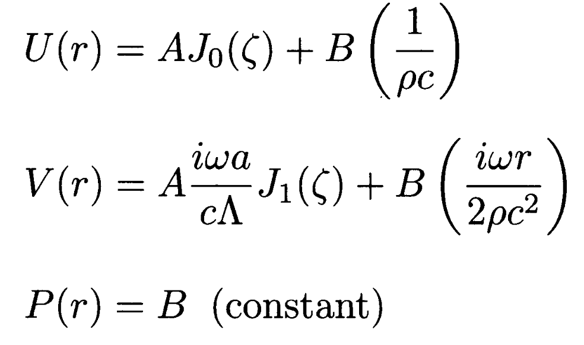
최종적으로 시공간에 따른 유체의 속도와 압력은 다음과 같다.
![[Pulsatile flow] 2. Force on the elastic tube wall](./images/img-008.png)
여기까지가 지난시간에 다룬 내용이다.
자 이제부터는 벽면의 고체의 변형을 고려하여,
벽이 얼마나 stress를 받고, strain을 가지는 지를 분석해보자.
(분석하는 이유는 결국 고체의 변형 = 유체의 변형,
서로 동일하기 때문이다. 벽면 boundary condition으로 인해)
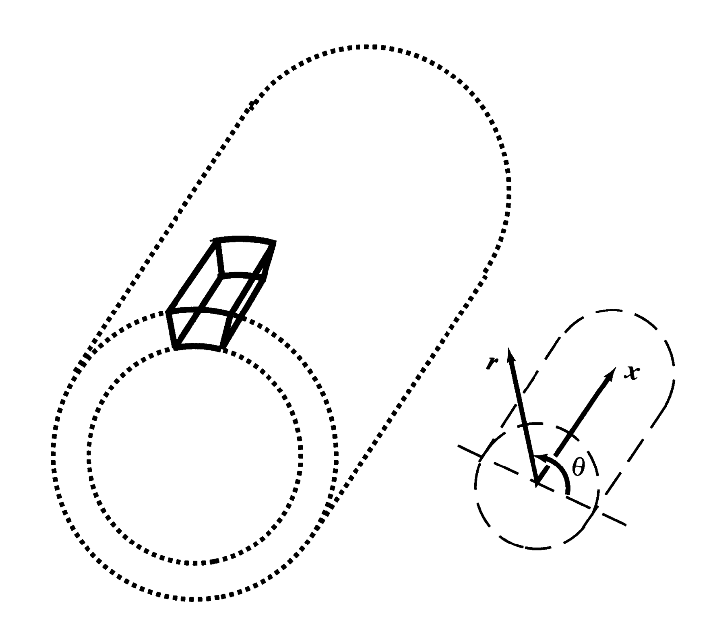
Navier stokes 방정식 증명하듯이, 튜브의 미소부피가 받는 힘을 분석해보자.
먼저 미소부피와 질량은 다음과 같이 쉽게 정의된다.
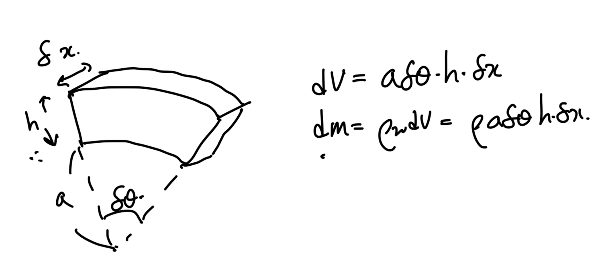
h: wall 두께, a: wall 내부 반지름
+ 다음과 같이, 크사이, 에타, 파이로
각방향의 displacement(압축 혹은 늘어난 길이)
를 정의해주자.
![[Pulsatile flow] 2. Force on the elastic tube wall](./images/img-011.png)
1. Axial direction (+x)
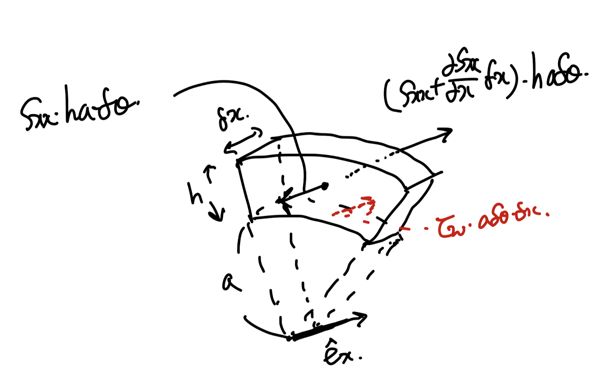
먼저, Axial 방향으로는 유체에 의한
전단응력과 옆의 고체 요소의 stress Sxx가 있다.
이를 뉴턴의 제2법칙 F=ma로 정리하면,
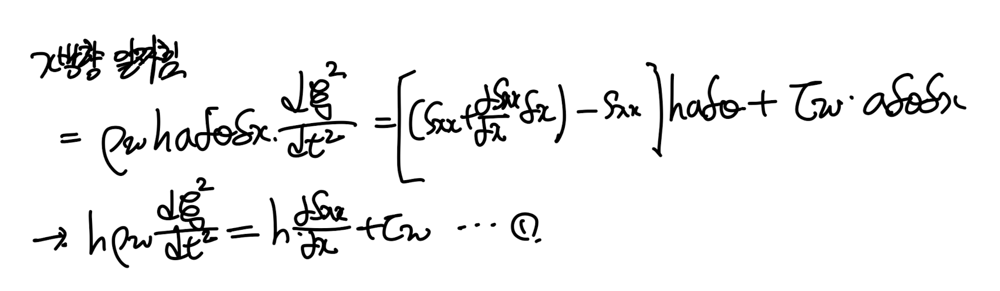
1. radial direction (+r)
![[Pulsatile flow] 2. Force on the elastic tube wall](./images/img-014.png)
radius 방향으로는 유체가 가하는 압력과,
고체의 곡률로 인한 Srr가 존재한다.
여기서 우리는 매우 thin 한 튜브라는 가정을 통해서,
튜브 내부에서 r에 따른 Srr의 변화가 존재하지 않는다고
가정하자.
For simplicity.
이후,
똑같이 이를 알짜힘 식으로 나타내면,
![[Pulsatile flow] 2. Force on the elastic tube wall](./images/img-015.png)
위에서 언급하였지만, Srr은 결국 미소튜브 옆의 element가
잡아당기는 힘(S
θ θ)
이 곡률로 인하여
-R방향으로(Srr) 작용하는 것이다.
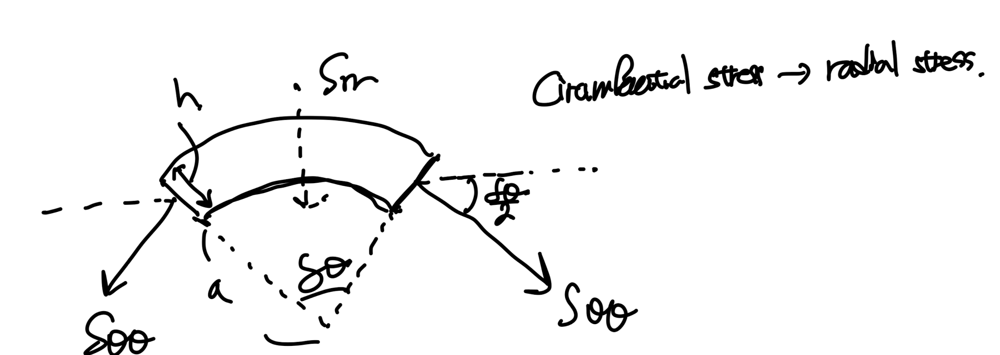
따라서, Srr을
Circumferential stress(S
θ θ)
로 표현하면
다음과 같다.
![[Pulsatile flow] 2. Force on the elastic tube wall](./images/img-017.png)
지금까지 구한식은 다음과 같다,
방정식을 풀기에는 미지수들이 많으므로
Stress-Strain relationship 을 이용해주자.
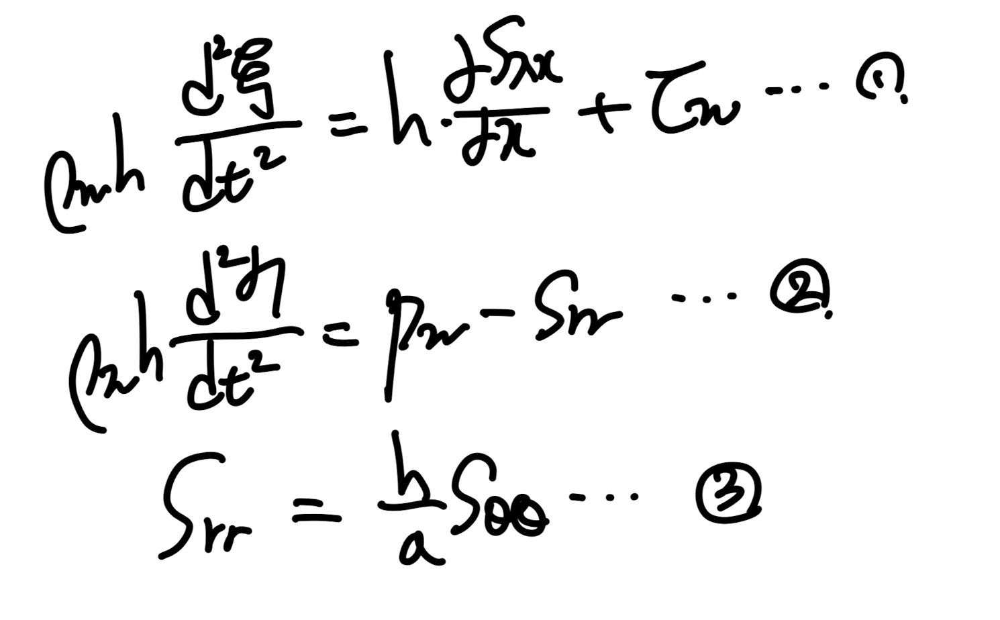
각 방향의 Strain을 Stress로 나타내는 것은
고체역학 시간에 배웠었다.
(Generalized Hook's Law)
![[Pulsatile flow] 2. Force on the elastic tube wall](./images/img-019.png)
위 x, theat 방향 strain에 3번 식을 대입해주면,
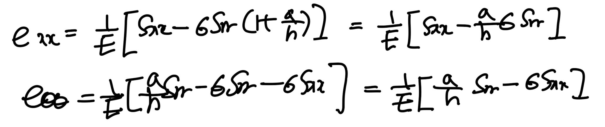
여기서 thin wall 가정을 통해,
![[Pulsatile flow] 2. Force on the elastic tube wall](./images/img-021.png)
따라서, 위식은 다음과 같이 정리된다.
![[Pulsatile flow] 2. Force on the elastic tube wall](./images/img-022.png)
이제 각 방향의 strain을 우리가 아는 변위들로 나타내주자.
![[Pulsatile flow] 2. Force on the elastic tube wall](./images/img-023.png)
먼저 axial 방향으로 변위는 x방향으로만 변화한다.
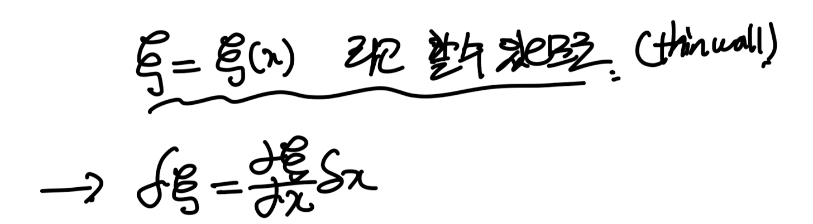
따라서, Strain 정의에 의해 6번식으로 정리된다.
![[Pulsatile flow] 2. Force on the elastic tube wall](./images/img-025.png)
다음 Angular strain를 일으키는 원인은 두가지로 나눌수 있다.
1. 각도의 증가로 인한 Angular 방향 element 길이 증가.
![[Pulsatile flow] 2. Force on the elastic tube wall](./images/img-026.png)
하지만, Axissymmetric 가정으로
모든 element들이 (x,r)이 동일할때,
angular defomration이 동일해야한다.
하지만 이를 만족하기 위해서는 deformation = 0
일 수 밖에 없다.
2번째로는 반지름의 증가로 인해서,
Element length가 증가하는 경우이다.
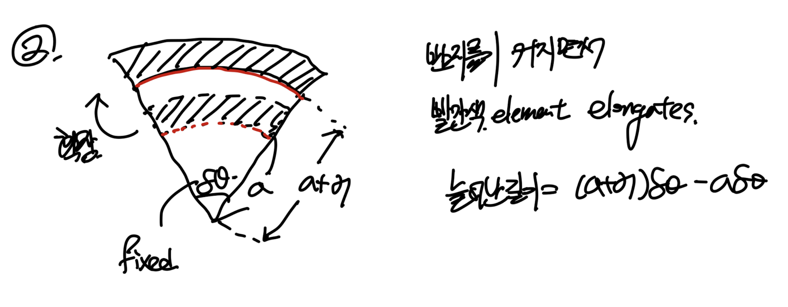
결론적으로 1번 효과는 존재하지 않고,
2번 효과로 인한 angular strain을 유도해주면 7번식이 도출된다.
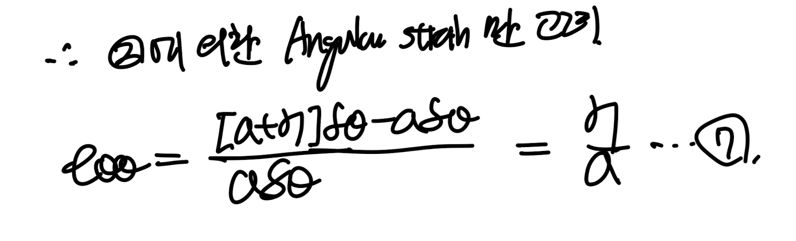
우리가 방금전에 구한 Strain들을, 4,5번 식
(generalized hook's law)에 대입해주면
strain과 stress의 관계식 8,9가 도출된다.
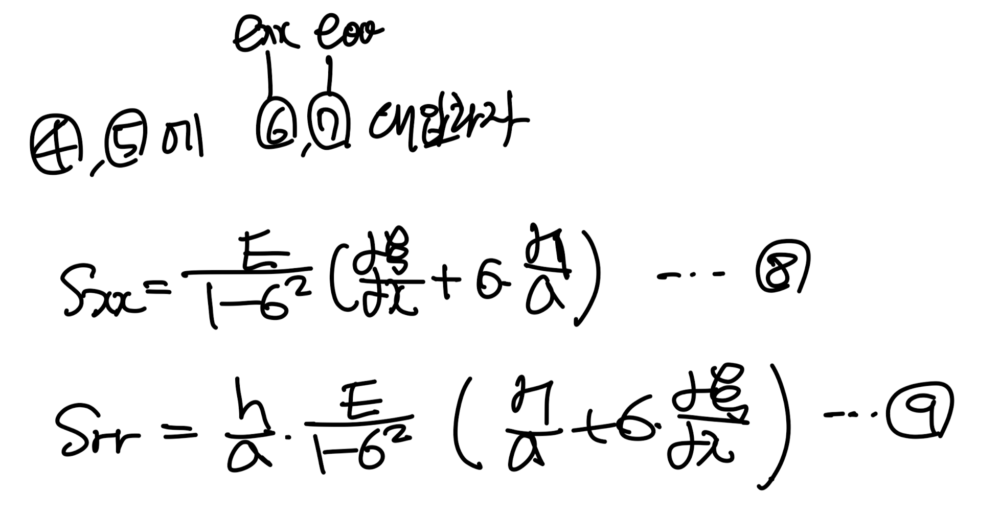
자 우리가 여기까지 구한 이유는 맨처음에 구한 1,2 Force식에서
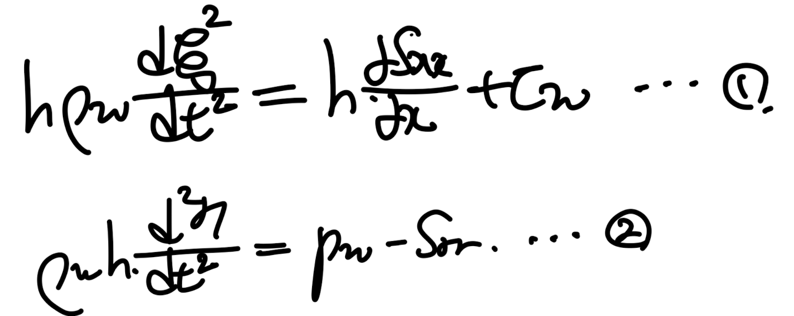
미지수가 너무 많았기 때문이다,
따라서 우리는 Stress- strain 관계식 (8,9)를 대입할 것이다.
대입해주면,
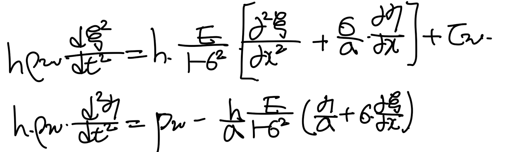
약분하고 정리해주면,
![[Pulsatile flow] 2. Force on the elastic tube wall](./images/img-032.png)
자 여기까지가 고체에 작용하는 Force balance equation
으로 유체의한 Shear stress, Pressure에 의한
고체의 각방향
Displacement ( ξ , η ) 식 2개를 유도하였다.
with 가정들,
1. Elastic tube
2. Thin wall thickness
여기서 한발짝 더 지금말고 다음 포스터에서 나갈 예정이다.
바로 shear stress, pressure에 유체의 성질로 나타낸 식을 대입하는것!!
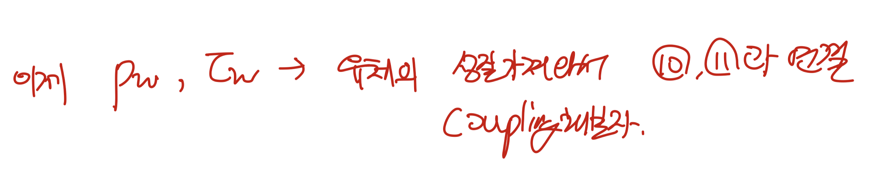
다음포스터에서 뵙겠습니다